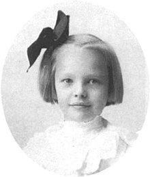

Life
- Amelia Earhart was born in Kansas in 1897.
- She lived in many different places, she still called Kansas her home
- A strong supporter of Equal Rights Amendment
- She wrote many tales about her adventures during her flying carrier
- She earned the the U.S. Distinguished Flying Cross. For her flight across the Atlantic Ocean
- We have no idea what happened to Mrs. Earhart. She disappeared while on a flight with her co-pilot.
- She lived during the time of the Spanish Flu Pademic of 1918. Served as a nurse for the sick patients. Caught pmenouia during her time as a nurse, but recovered.
- Was engaged to Putman, soon after their engagement, she broke off.
- Her plane is now on display at the Air and Space Musuem in Washington D.C.
- Amelia Erhart Park is an Naval Base of the U.S Navy not in use anymore that is named in memory of her. This park was named in memory of her, since it was the last place she took off for her last known flight to Hawaii with her co-pilot.
Earhart's life revolved around flying to start, she placed third at the Cleveland Women’s Air Derby, later nicknamed the “Powder Puff Derby” by Will Rogers. As fate would have it, George Putnam entered her life, too. The two developed a friendship during preparation for the Atlantic crossing and were married February 7th, 1931. Intent on retaining her independence, she referred to the marriage as a “partnership” with “dual control.”
On January 11, 1935, she became the first person to fly solo across the Pacific from Honolulu to Oakland, California. Chilled during the 2,408-mile flight, she unpacked a thermos of hot chocolate. “Indeed,” she murmured, “that was the most interesting cup of chocolate I have ever had, sitting up eight thousand feet over the middle of the Pacific Ocean quite alone.” Later that year, she was the first to solo from Mexico City to Newark. A large crowd “overflowed the field” and rushed Earhart’s plane. “I was rescued from my plane by husky policemen, one of whom, in the ensuing melee, took possession of my right arm and another of my left leg.” The officers headed for a police car, but chose different routes. “The arm-holder started to go one way, while he who clasped my leg set out in the opposite direction. The result provided the victim with a fleeting taste of the tortures of the rack. But, at that,” she said good-naturedly, “it was fine to be home again.”